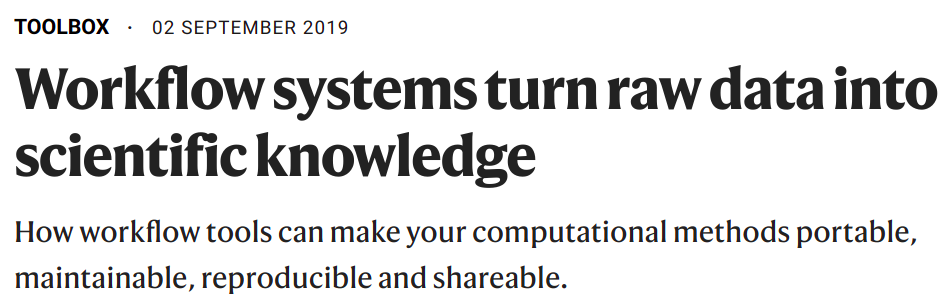
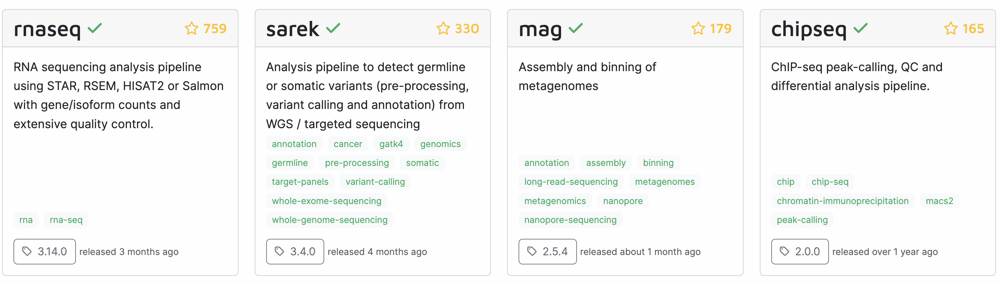
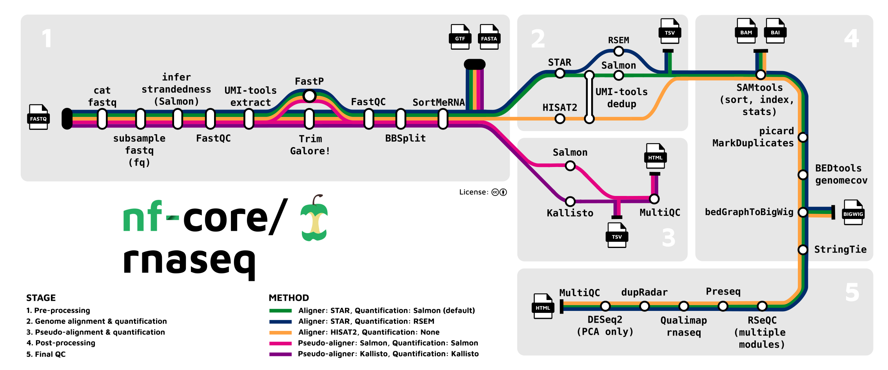

Workflow management
Week 9 – Lecture I
![]()
1 Introduction
TBA
2 Markdown files with your analysis workflow
In the past few weeks of this course, you’ve created Markdown files with the commands you used to run your scripts. Alternatively, you can directly type such commands in the terminal, but this is harder to do without making mistakes (especially with more complex constructs like loops) and reduces reproducibility, since you don’t keep a good record of what you did.
So far, these Markdown files have been short, and may not have given you a good picture of what this would look like in the context of a larger research project, where you’d run a whole series of steps with different bioinformatics tools and perhaps custom scripts. As discussed in week 2, for larger projects, it is a good idea to create at least two separate Markdown files for the code you used to run scripts and other commands:
A “lab notebook”-style file that has chronological entries and is comprehensive: this should cover everything of note that you did, including mishaps, dead ends, and things that were redone differently later on.
A “protocol” (or “recipe” / “workflow”)-style file that has the final code in order of execution needed to run and rerun your entire project’s computational work.
2.1 A longer protocol file example
For this example, let’s have in mind a simple RNA-Seq analysis for 3 samples that:
- Trims reads in FASTQ files (independently for each sample)
- Maps (aligns) reads to a reference genome (independently for each sample)
- Creates a gene expression count table from the alignments (for all samples together)
{kind=link}
between the steps: the output of one step is the input of the next.
The example only has 3 samples, and the first two steps are executed separately
for each sample, while the last step is executed once for all samples.
Here is an example “protocol-style” Markdown file for this RNA-seq analysis:
<!--- [Hypothetical example - don't run any of the code in this document] -->
# RNA-Seq analysis of _Culex pipiens_
- Author: Jelmer Poelstra, MCIC, OSU (poelstra.1@osu.edu)
- Date: First created on 2025-04-01, last modified on 2025-08-25
- GitHub repository: <https://github.com/jelmerp/culex>
- These steps have been run at the Ohio Supercomputer Center (<www.osc.edu>)
- Working dir at OSC: /fs/ess/PAS2880/users/jelmer
- More information about the project and its files: `README.md` in the working dir
## Prerequisites
- **Input files**:
- The input files are:
- Paired-end FASTQ files
- Reference genomes files `assembly.fna` and `annotation.gtf`
- Input file paths are set below and can be adjusted to your situation.
- If you're running this at OSC and have access to project PAS2880,
you can copy the files from the working dir specified above,
or adjust the input file paths below to directly use these files.
- Otherwise:
- Reference genome files can be downloaded from <URL>
- FASTQ files are available through the SRA via accession number <ACCESSION>
- **Software**:
- The scripts will run programs using Singularity/Apptainer containers
- If running at OSC, no software installations are needed
- If you're not at OSC, you need to have `apptainer` and `Slurm` installed.
- You don't need to create the output dirs because the scripts will do so.
## Set up: Set the input file paths
```bash
fastq_dir=data/fastq
ref_assembly=results/01_refseqs/assembly.fna
ref_annotation=results/01_refseqs/annotation.gtf
```
## Step 1: Trim the raw reads
The `trim.sh` script runs for one sample at a time and takes 3 arguments -
input forward-read (R1) FASTQ, reverse-read (R2) FASTQ, and the desired output dir:
```bash
for R1 in "$fastq_dir"/*_R1.fastq.gz; do
R2=${R1/_R1/_R2}
sbatch scripts/trim.sh "$R1" "$R2" results/trim
done
```
## Step 2: Align the trimmed reads to a reference genome
The `map.sh` script runs for one sample at a time and takes 4 arguments -
input trimmed R1 and R2 FASTQs produced by `trim.sh`, a reference FASTA file,
and the desired output dir:
```bash
for R1 in results/trim/*_R1.fastq.gz; do
R2=${R1/_R1/_R2}
sbatch scripts/map.sh "$R1" "$R2" "$ref_assembly" results/map
done
```
## Step 3: Count gene-level alignments
The `count.sh` script runs for all samples at once and takes 3 arguments -
input dir with alignments produced by `map.sh`, a reference GTF file,
and the desired output dir:
```bash
sbatch scripts/count.sh results/map "$ref_annotation" results/count_table.txt
```2.2 The rationale behind organizing and running scripts this way
The protocol above submits a shell script one or more times for each of the three steps (trim.sh, map.sh, andcount.sh), with each script taking arguments to specify the in- and output files, and running an (unspecified) bioinformatics program to perform that step.
Here are some advantages of using such a script structure with single-step, flexible (argument-accepting) scripts, and an overarching protocol Markdown file to describe the entire workflow:
- Rerunning everything, including with a modified sample set, or tool settings, is relatively straightforward — both for yourself and others, improving reproducibility.
- Re-applying the same set of analyses in a different project is straightforward.
- The Markdown file documents the steps taken.
- It (more or less) ensures you are including all necessary steps.
However, in the example above, it is import to realize that you cannot run all the code at once. This is because there are three batch job steps, with both the second and third steps using the output of an earlier step as their input. Therefore, if you run all code at once, all batch jobs will be submitted at the same time: this means that later steps will start running before the earlier step has finished, i.e. before their input files are available, and will fail.
2.3 How to further automate this?
Waiting for each step to finish before submitting the next step is a bit tedious, and means the above protocol is not a fully automated pipeline. Therefore, you may want to find ways to:
- Reduce the number of steps and/or
- Avoid having to wait for each step to finish before moving on to the next
Combining scripts to reduce the number of steps
Once you get the hang of writing shell scripts, it may be appealing to string a series of programs/steps together in a single script, rather than having “single-step scripts” like in the example above.
At the extreme, you could completely solve the problem of simultaneous batch job submission by including all steps (trimming, mapping, counting) in a single script: i.e., you’d submit a single batch job to run all steps.
Can you see a potential problem with this approach?
but this would make for a very inefficient pipeline, since you’d now be running steps that can be parallelized across samples consecutively.
TBA
Even if combining steps that run multiple times versus steps that run once, why not at least combine in a single script, trimming and mapping in the example above? Since both of those steps will be run for each sample separately. While this is not unreasonable, in practice, this kind of strategy often ends up leading to more difficulties than convenience.
For example, what if you realize that the mapping needs to redone because you want to change some settings. Now you have a script that both trims and maps, and you’re forced to rerun both. Well, not entirely: you could add an option to your script to only run one step, and/or to have the script check for the presence of output files. But now things are starting to get pretty complicated, and they will increasingly more complicated if you try to combine even more steps. After all, a real RNA-Seq analysis typically contains several more steps.
All in all, my recommendation is to keep your shell scripts simple in the sense that they should generally just run one program, and not a sequence of programs.
Automate batch job submission
Foremost, you’d need to overcome the problem of simultaneous batch job submission. But a decent pipeline detect failure and then stop, and to rerun parts of the pipeline flexibly. The latter may be necessary after, e.g.:
- Some scripts failed for all or some samples
- You added or removed a sample
- You had to modify a script or settings somewhere halfway the pipeline.
How could you implement all of that?
- Push the limits of the Bash and Slurm tool set (not recommended)
Useifstatements, additional script arguments, and Slurm “job dependencies” (see the optional reading page) — but this is hard to manage for more complex workflows.
A better solution
Use a formal workflow management system like Snakemake or NextFlow, which can take care of all these details and more for you.
3 Workflow management systems
Pipeline/workflow tools, often called “workflow management systems” in full, provide ways to formally describe and execute pipelines.
The need for specialized programs to orchestrate pipelines
TBA - Explain this is about the bioinformatics/algorithmic stage of analyses.

Two quotes from this article:
Typically, researchers codify workflows using general scripting languages such as Python or Bash. But these often lack the necessary flexibility.
Workflows can involve hundreds to thousands of data files; a pipeline must be able to monitor their progress and exit gracefully if any step fails. And pipelines must be smart enough to work out which tasks need to be re-executed and which do not.
Advantages of workflow management systems
Advantages of workflow management systems are improved automation, flexibility (e.g., ease of running with different settings or on different datasets), portability (ease of running on different computers), and scalability (ease of scaling up to larger datasets):
- Automation
- Detect & rerun upon changes in input files and failed steps.
- Automate Slurm job submissions.
- Integration with software management.
- Flexibility, portability, and scalability
This is due to these tools separating generic pipeline nuts-and-bolts from the following two aspects:- Run-specific configuration — samples, directories, settings/parameters.
- Things specific to the run-time environment (laptop vs. cluster vs. cloud).
Nextflow
The two most commonly used command-line based options in bioinformatics are Nextflow and Snakemake. Both are small “domain-specific” languages (DSLs) that are an extension of a more general language: Python for Snakemake, and Groovy/Java for Nextflow. Unfortunately, their learning curves are steeper than you might expect for a tool that “merely” needs to tie your workflow steps together. Therefore, we’ll spend this week and next week on learning one of them: Nextflow.
4 nf-core pipelines
You don’t always have to build your own pipeline. Many publicly available pipelines exist, and if reliable pipelines exist for your planned analyses, there are several advantages to using one of these instead of trying to build your own pipeline.
For example, a bewildering array of bioinformatics programs is often available for a given type of analysis, and it can be very hard and time-consuming to figure out what you should use. If you use a XXX, you can be confident that it uses a good if not optimal combination of tools and tool settings: most of these pipelines have been developed over years by many experts in the field, and are continuously updated.
Among workflow tools, Nextflow has by far the best ecosystem of publicly available pipelines. The “nf-core” initiative (https://nf-co.re, Ewels et al. (2020)) curates a set of best-practice, highly flexible, and well-documented pipelines written in Nextflow:

For many common omics analysis types, nf-core has a pipeline. It currently has 58 complete pipelines — these are the four most popular ones:

Here’s a closer look at the most widely used nf-core pipeline, the rnaseq pipeline, which we’ll run in week 15 of the course:
